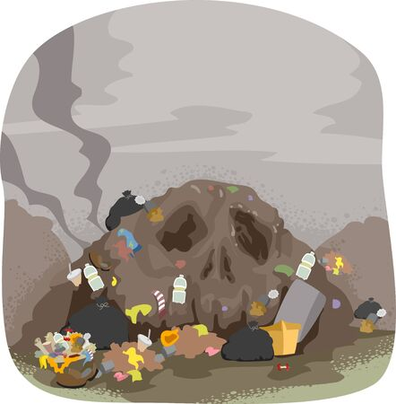

Land Pollution
Here are some effects of Land pollution :-
- Soil pollution is another form of land pollution, where the upper layer of the soil or the topsoil’s composition is damaged.
- This is caused by the overuse of chemical fertilizers, soil erosion triggered by running water and other pest control measures.
- Groundwater PoisoningWhen harmful substances from industrial processes, the chemicals could end up in the groundwater system.
- Effect on Human Health.The land, when contaminated with toxic chemicals lead to problems like skin cancer
- Causes DiscomfortThe city loses its attraction as a tourist destination as landfills do not look good when you move around.
Here are some ways to prevent land pollution
- Make people aware of the concept of Reduce, Recycle and Reuse.
- Reusing materials help to reduce the requirement of harvesting resources. The products that cannot be reused can likely be recycled.
- Reduce the use of non-biodegradable materials.
- Avoid buying packaged items as they will lead to creating garbage and end up in the landfill site.
